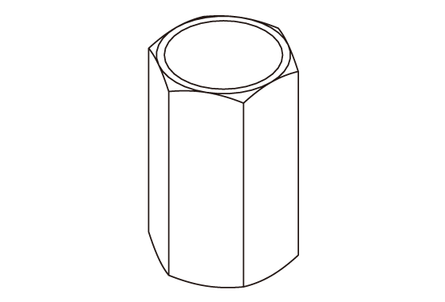

LEMON Manuals
: Even more car manuals for everyone: 1960-2025
Home
>>
Honda
>>
2016
>>
Civic LX, 4D Sedan, Automatic CVT Trans
>>
Repair and Diagnosis (Single Page)
>>
Electrical
>>
Charging Systems
>>
Charging System - Service Information
>>
Removal and Installation
>>
Over-Run Alternator Decoupler (OAD) Pulley Removal and Installation (K20C2/K20C1)
>>
Notes
Over-Run Alternator Decoupler (OAD) Pulley Removal and Installation (K20C2/K20C1): Notes
Special Tools Required
Image
Description/Tool Number

Courtesy of HONDA, U.S.A., INC.
Alternator OAD Pulley Holder 07AAB-TK8A100